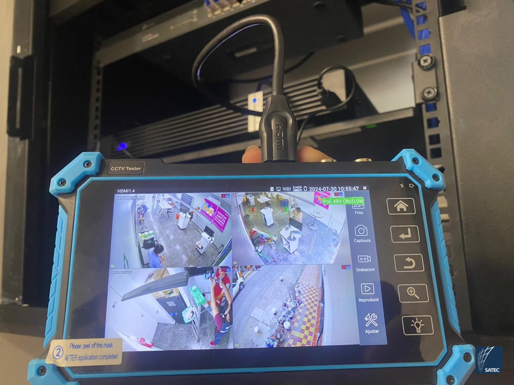
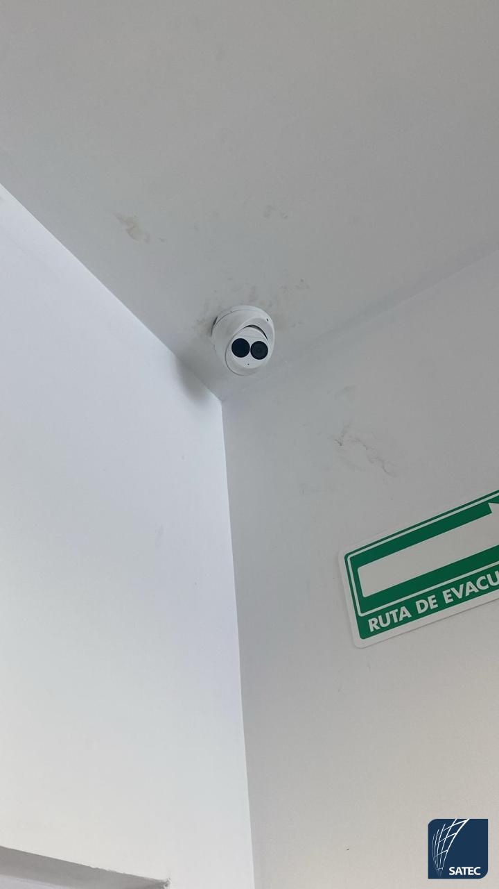
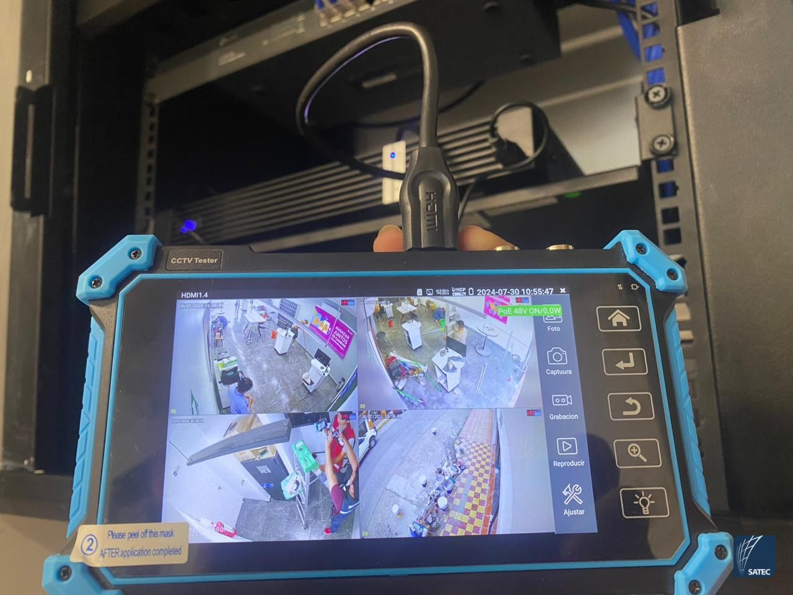
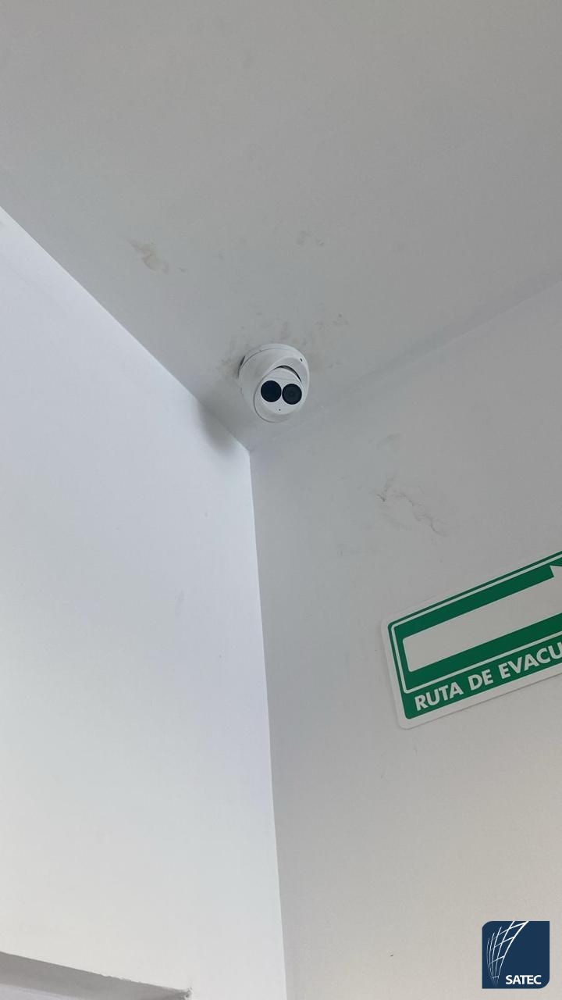

Se realizó la implementación completa de infraestructura de red en una sucursal de AT&T, garantizando conectividad estable, seguridad y un entorno tecnológico confiable para sus operaciones diarias.
Actividades realizadas
- Diseño e instalación de cableado estructurado para sistemas de videovigilancia.
- Instalación y configuración de Access Points para mejorar la cobertura WiFi.
- Conexión de equipos como displays, computadoras y dispositivos de red.
- Implementación de rack de pared con organización profesional.
- Instalación de panel de parcheo, switch y administración del cableado.
Tecnologías y soluciones
- Cableado estructurado profesional.
- Redes inalámbricas empresariales.
- Organización y certificación de puntos de red.
- Infraestructura preparada para crecimiento futuro.
Resultados
- Mejora significativa en la estabilidad de la red.
- Cobertura WiFi optimizada.
- Infraestructura segura y escalable.
- Mayor orden y facilidad de mantenimiento.
Este proyecto fue desarrollado como parte del equipo de ingeniería, asegurando altos estándares de calidad y rendimiento.
Si deseas una instalación similar para tu empresa, negocio u oficina, puedes contactarme para una asesoría personalizada.
Galería del proyecto
 


